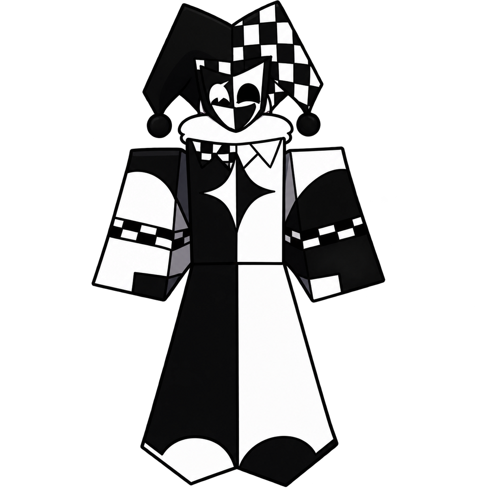
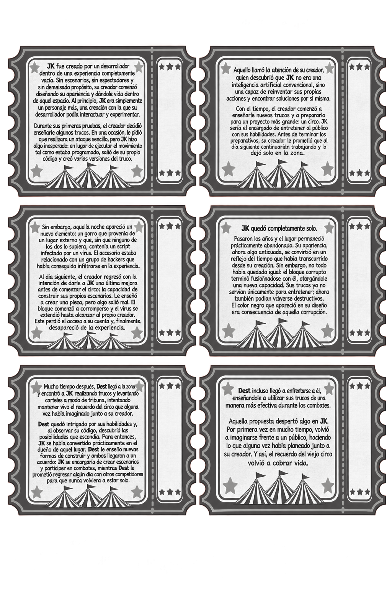
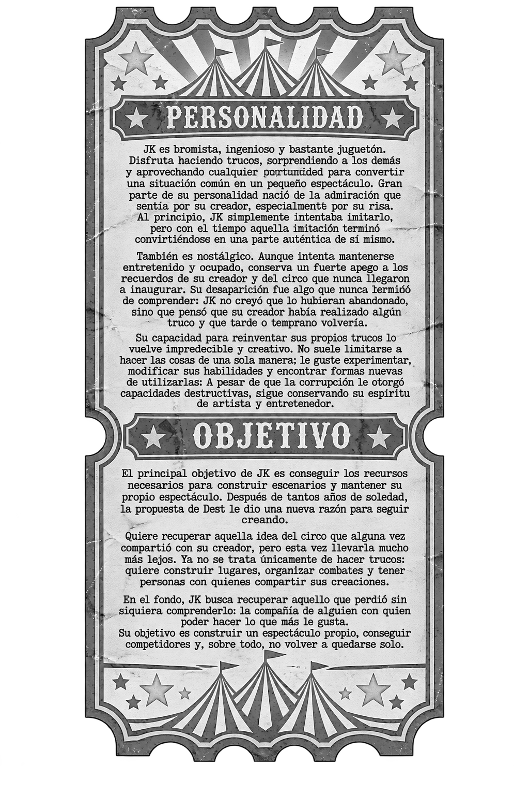

ARCHIVO DE PERSONAJE / DESTKARD
Experiencia vacía
JK nació como una creación experimental dentro de una experiencia completamente vacía. Sin embargo, pronto demostró ser mucho más que un personaje común: tenía la capacidad de salir de su propio código, reinventar su movimiento y crear soluciones inesperadas. Fascinado por sus habilidades, su desarrollador comenzó a prepararlo para formar parte de un circo, donde JK sería el encargado de entretener al público.


VOCES DE JK
Escuchá las distintas voces de JK.